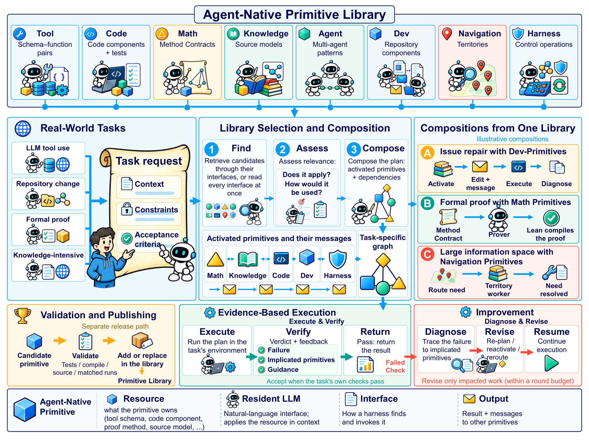
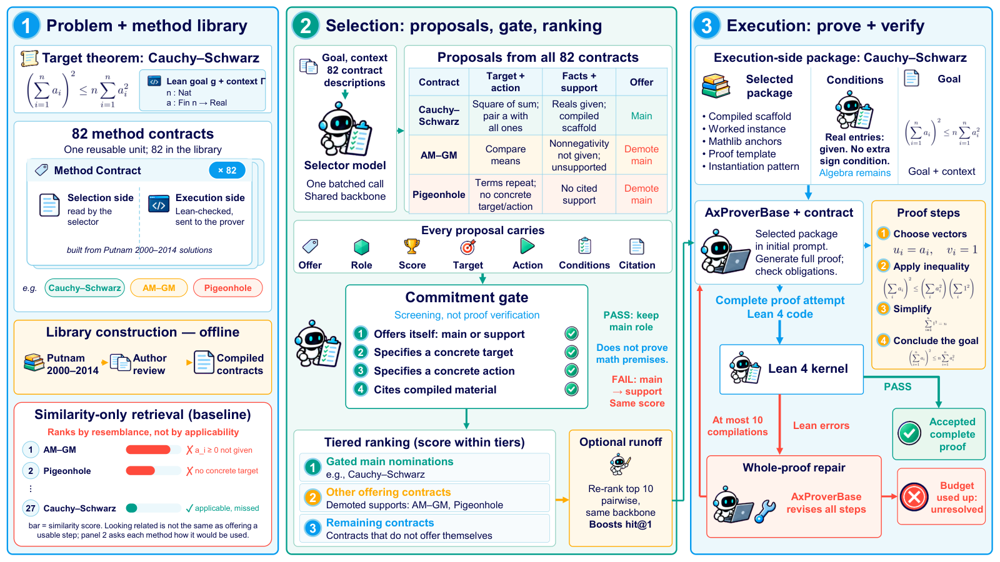

One of eight primitive families, Math Primitives, packages proof methods as Lean 4/Mathlib contracts and is evaluated on Putnam and IMO ProofBench problems in Lean.
Abstract
How can an agent handle a real-world task end to end? Frontier models with their own harnesses still fall short on real-world benchmarks: on Terminal-Bench 4.0, GPT-5.6 Sol with Codex resolves 37.3% of the tasks and Claude Opus 5 with Claude Code 51.8%. These tasks fail at the step from reaching a resource to applying it, which we call the last mile to the real world. Existing approaches put the resource within reach but leave the competence to apply it with the caller, so each harness rebuilds that competence. We introduce agent-native primitives, reusable units that equip a resource with a resident LLM that applies it in context and communicates with other primitives, and HEELO (Harness Engineering around Evolving Agent-Native Primitives for the Last Mile to Real-WOrld Tasks), a harness engineering framework that builds each task's harness from a library of such primitives. HEELO composes the primitives a task needs into a task-specific graph, verifies the result against evidence from the environment, revises the primitives a failure implicates, and admits new or improved primitives after validation. We instantiate HEELO with eight primitive families, each built for one kind of task, and evaluate them on more than twenty benchmarks. Dev-Primitives raise Terminal-Bench 4.0 resolution from 37.3% under Codex to 55.5% on the same backbone, Harness Primitives composed per task raise Terminal-Bench 2.0 Pass@1 from 60.0% for the seed harness to 72.2%, Tool Primitives raise ToolBench pass rate from 55.8% to 75.1%, and Navigation Primitives raise GAIA-Text-103 accuracy from 45.6% to 58.3%. On the 46 real-world tasks of our heelo.dev platform, Claude Opus 5.5 with Claude Code and GPT-6.1 Sol with Codex complete 9 each on their own and 39 and 35 when connected to HEELO through our MCP server, with 1.9$\times$ and 2.3$\times$ less time and 1.55$\times$ lower cost per completed task.
Problem
Frontier models running in their own harnesses still fail many real-world tasks at the step from reaching a resource to applying it in context, which the authors call the last mile. Existing approaches make resources reachable but leave each harness to rebuild the competence needed to apply them.
Approach
HEELO builds a task-specific harness from a library of agent-native primitives: resources paired with a resident LLM that applies them and messages other primitives. It composes the primitives a task needs into a graph, verifies results against environment evidence, revises the primitives a failure implicates, and admits new primitives only after validation. Eight families are instantiated, including Math Primitives. These are 82 Method Contracts built from Putnam 2000–2014 solutions, each with a Lean scaffold that must compile. The top-ranked contract guides a whole-proof repair loop limited to ten Lean compilations per problem.

Figure 2: Overview of HEELO. Top: the agent-native primitive library, one box per family with the resource its primitives own. Middle: a real-world task enters as a task request with its context, constraints, and acceptance criteria; library selection and composition finds candidates through their interfaces, lets each assess its own relevance, and composes a task-specific graph whose activated pr

Figure 7: Math Primitives: self-advertised method selection on an illustrative Cauchy–Schwarz goal. (1) The task is a Lean goal with its local context. The library holds 82 Method Contracts, built offline from Putnam 2000–2014 solutions with every extracted method reviewed by the authors, and a selector reads only their selection sides: the method, its typical target, when it applies and when not,
Results
Dev-Primitives raise Terminal-Bench 4.0 resolution from 37.3% to 55.5%, Tool Primitives raise ToolBench pass rate from 55.8% to 75.1%, and Navigation Primitives raise GAIA-Text-103 accuracy from 45.6% to 58.3%. Math Primitives are evaluated on 120 held-out Putnam 2015–2025 problems and 60 IMO ProofBench problems in Lean 4 with Mathlib.